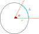

Equations et inéquations du premier degré à une inconnue
;
Equations et inéquations du second degré à une inconnue ;
Forme canonique d’un trinôme
Equations du second degré à une inconnue ;
Signe d’un trinôme du second degré
Inéquations du second degré à une inconnue ;
Les systèmes :
Equations du premier degré à deux inconnues ;
Systèmes de deux équations du premier degré à deux inconnues
;
Régionnement du plan.
PRE-REQUIS :
polynomes
ordre
Equations et Inéquations $1^(ere) degré$
Rec… péd..
Les techniques de résolution des équations et inéquations du
premier degré à une inconnue ont été étudiées au collège, il
faudra renforcer cette pratique par l’étude de quelques exemples
simples faisant intervenir la valeur absolue et les équations
paramétriques simples, dans le but de développer la capacité des
élèves à utiliser le raisonnement par disjonction des cas.
Il faudra habituer les élèves à résoudre des équations du
second degré sans recours au discriminant (racines évidentes,
techniques de factorisation,…).
Les équations et inéquations paramétriques du second degré
sont hors programme ;
Des problèmes, issus de la vie quotidienne ou des autres
matières, devront être proposés dans le but d’habituer les élèves
à mathématiser des situations et de les résoudre ;
Les élèves ayant déjà utilisé la méthode de substitution et la
méthode des combinaisons linéaires, pour résoudre un système de
deux équations à deux inconnues, il faudra renforcer celles- ci,
par la méthode du déterminant à l’aide des exercices ;
Il faudra lier la résolution d’un système de deux équations à
l’étude de la position relative de deux droites;
On exploitera la représentation graphique des solutions d’une
inéquation du premier degré à deux inconnues dans la résolution de
quelques problèmes
Cap… att..
Résoudre des équations et des inéquations se ramenant à la
résolution d’équations et d’inéquations du premier ou du second
degré à une inconnue ;
Résoudre un système de deux équations du premier degré à deux
inconnues en utilisant différentes méthodes (combinaison linéaire,
substitution, déterminant) ;
Mathématiser, en utilisant des expressions, des équations, des
inéquations, des inégalités ou des systèmes, une situation faisant
intervenir des quantités variables ;
Représenter graphiquement les solutions d’inéquations ou de
systèmes d’inéquations du premier degré à deux inconnues, et
utiliser cette représentation dans le régionnement du plan et dans
la résolution de problèmes
Calcul trigonométrique
Cercle
trigonométrique – Abscisse curviligne
révision
donner le périmètre (المحيط) d’un cercle
donner la relation entre l’abscisse d’un point et la distance
de l’origine
On considère le cercle $(C)$ de centre $O$ et de rayon $r=1$
(Voir la figure ci-dessous).
donner le périmètre (المحيط) du cercle $C$
Déduire la longueur de l’arc $hat(II’)$ , $hat(IJ)$ et
$hat(IJ’)$
soit $I$ l’origine des abscisses des points sur le cercle
donner les abscisses de $I , J , I’ ,J’$
combien des abscisses on a pour chaque points du cercle
donner une relation entre les les abscisses de points $I$ et
le nombre des tours $k$
définition
le cercle trigonométrique:
son centre est $O$
son rayon est $r = 1 ("unité")$
orienté positif (عكس عقارب الساعة ).
muni d’un origine $I$
Tout point $M$ de cercle trigonométrique s’associe par à un
nombre réel s’appelle abscisse curviligne du
point et on écrit $M(x)$ .
remarque
Tout point du cercle trigonométrique admet une
infinité d’abscisses curvilignes.
si $x$ et $x’$ des abscisses de même point alors $x’ = x + 2k
pi // k in ZZ$ et on écrit $x’ -= x [2 pi]$ (se lit $x’$ est
congru a $x$ modulo $2 pi$ )
l’abscisse curviligne appartient à l’intervalle $]-pi ; pi]$
et s’appelle abscisse curviligne principale .
Exemple 1
Soit le cercle trigonométrique $C$ on a :
$I(…)$
$J(…)$
$I’(…. )$
$J’(….)$
pour le point $I$ on a : $I(…)$ $I(….. )$ $I(…)$ $I(… )$
$I(… )$ $I(-2pi )$
on a $…. in ]-pi ; pi]$ alors $…. $ est abscisse curviligne
principale de $I$
Exemple 2
Déterminer l’abscisse curviligne principale du point
$A((25pi)/4)$
application
Déterminer les abscisses curvilignes principales des points
suivants :
$A((7pi)/2)$
$B((67pi)/4)$
$C((267pi)/6)$
$D((-11pi)/3)$
$E(1002pi)$
$F(13pi)$
Angles orientés
définition
la mesure d’un angle $theta$ en radian
($rad$) est La longueur de l’arc $S$ intercepte par l’angle
$theta$ sur le rayon du cercle $r$

alt text
$theta$ en radian $= s/r$
Si $r=1$ on a : mesure en radian = abscisse
curviligne
Il existe une autre unité de mesure des angles s’appelle le
grade $gr$
on a : $180^o = pi quad rad = 200 quad gr $
remarque
⚠️ vérifier
l’unité dans le calculatrice avant calculer : $r$ pour $rad$ et
$d$ pour $degré$
{kind=link}
{kind=link}
{kind=link}